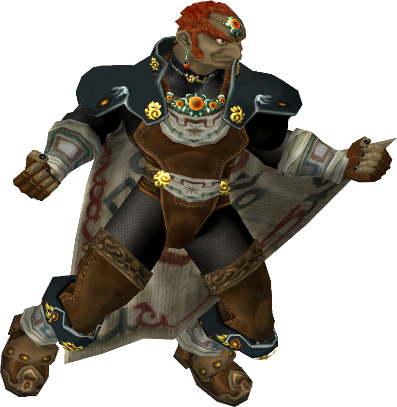

|  | Ranked 14th of tier list : GANONDORF |
| Weight | |
|---|---|
| 4th heaviest (5th in PAL) | |
| Shield stats | |
| Roll lenght | 8th longest |
| Shield size | 3-5th biggest |
| Grab range | 18th longest |
| Wavedash lenght | 16th longest |
| Movement stats | |
| Walking speed | 23th fastest |
| Turning speed | 12-14th fastest |
| Running speed | 19th fastest |
| Aerial stats | |
| Jump squat | 7 frames (23rd fastest) |
| Short hop | 20-21st highest |
| Aerial speed | 20-21st fastest |
| First jump height | 23rd highest |
| Seconde jump height | 22nd highest |
| Total jump height | 19th highest |
| Average fall speed | 10th fastest |
| Fast falling speed | 10th fastest |
| Falling speed | 10th fastest |
| Ledge stats | |
| 0-99% ledge roll | 2nd longest |
| 100%+ ledge roll | 2nd longest |
| 0-99% ledge attack range | 5th farthest |
| 100%+ ledge attack range | 4th farthest |
| Intangible ledgedash (Optimal/Perfect) | 4/18 frames |
| Notable players | |
| Bizzarro Flame, Krage, Eikelmann | |
| Smashboard forum | |
| http://smashboards.com/forums/ganondorf.110/ | |
Ganondorf currently ranks 14th in the E tier on the Melee tier list. Ganondorf boasts extreme power, good reach, decent chaingrabbing ability, and very useful aerials, including the strongest meteor smash in the game in his down aerial. He also has several effective edgeguarding options including the aforementioned down aerial, both the strong and weak hitboxes of his up aerial, and his back aerial. Nonetheless, Ganondorf has extreme flaws to counteract these great strengths as well. He has a bad neutral game due to his poor dash dance and lack of non-commital approaching moves, forcing Ganondorf players to rely more on reads and baits, and the punishes that come with them.
However, Ganondorf is also very susceptible to punishes himself, as he is easily comboed and chaingrabbed due to his size and weight, and is very easily edgeguarded due to his very predictable (albeit long) recovery. He is also vulnerable to projectiles and has few ways to deal with characters that outrange him or have very fast attacks. Because of this, while Ganondorf has good matchups against other mid-tier and low-tier characters, including two nearly unloseable ones against Pichu and Kirby, he struggles against the top tier characters (especially Fox and Sheik).